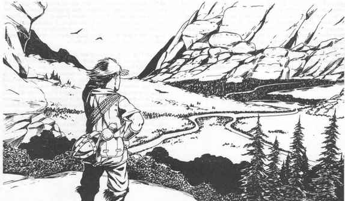

正常视觉 · Normal Vision

正常视觉是人类、大多数其他生物和角色种族平时使用的视觉。它能看见全光谱中红外与紫外之间所谓“可见光谱”范围内的图像、颜色和其他视觉现象。在白昼的清澈空气中，正常视觉的有效范围为 500 码。这意味着拥有无阻挡视线的角色，可以在该距离辨认体型 M 生物或物体的基本形状；体型 S 的生物或物体可从 250 码处看见，体型 L 的则至少能从 1000 码处看见，对于特别巨大的生物或物体（例如巨龙或高塔），距离还可能大得多。
“无阻挡”在这里是一个重要词语，因为视线上的几乎任何东西都可能构成阻挡。当观察者和目标都在地面且处于同一高度时，理想的观察条件十分少见。如果一名六英尺高的兽人站在完全平坦、毫无特征的平原中央，500 码外的角色可以看见其轮廓。如果平原覆盖三英尺高的草和植被，兽人的可见形体会变小，因为只有一半身体露在外面；因此只能从 250 码外看见它，就像它是体型 S 生物一样。
当观察者与目标处于截然不同的高度时，往往能得到无阻挡视线。站在远高于周围平原的孤山顶上的角色，可以向各个方向看出数英里。然而，正常视觉的有效范围没有改变：他仍必须在体型 M 物体或生物 500 码以内，才能分辨其基本形状并可能辨认身份。
反过来也同样成立：山顶角色自己也会被 500 码以内的其他观察者看见并辨认。显然，远距离可见性取决于观察角度，既可能是恩惠，也可能是诅咒。
表 41：户外正常视觉范围
| 天气/能见度 | 白昼 | 暮光 | 月光 | 黑暗 |
|---|---|---|---|---|
| 清朗 | 500 | 300 | 50 | 25 |
| 阴天 | 400 | 250 | 50 | 25 |
| 中雾 | 150 | 100 | 25 | 15 |
| 大雾、雨或雪 | 50 | 30 | 15 | 10 |
| 强雪伴风 | 35 | 25 | 10 | 5 |
| 飞沙/尘土 | 20 | 20 | 10 | 5 |
表中数字以码表示。给定范围是观察者辨认一个从邻近地形和环境中突出的体型 M 物体的距离；体型 L 物体取两倍，体型 S 物体取一半。
在给定距离看见目标，假定观察者正专注于远距离视觉，目标若存在则没有隐藏，也没有主动避免被发现。如果前例中的兽人躺在平坦、毫无特征的平原中央，角色从远处发现它的机会会大幅降低；若它躺在三英尺高的草中，观察者靠近之前几乎不可能看见它。
白昼或暮光下，角色可以同时使用远距离和近距离正常视觉：每隔几秒改变视线，就能同时留意眼前明显物体和远处目标。光线足够时，只要持续移动视线，角色可以用完整正常速度移动，同时注意近处和远处的可见特征。许多物体在近距离会变得明显，仅仅因为它们已经进入视线。
例如，即便角色在白昼或暮光中专注于远处山峰上的物体，也几乎不可能随便走过悬崖边；只要他没有一边抬头盯着天空一边朝边缘走，视野会在到达那里之前看到悬崖边。
月光或黑暗中，照明稀少或几乎不存在，同时关注远近物体就困难得多。角色改变视线的短短几秒内，可能走到上次看过的区域前方的裂缝或坑洞边。独自在月光或黑暗中移动时，通常最好关注脚下而不是行进方向，除非确定正前方地形没有危险。两名或更多角色一起旅行时，最好分配“瞭望任务”：一人观察远方，另一人仔细注意脚前几步。光线不佳时扫描远处最安全的方式是先停下，再向黑暗中观察；但即使如此，也不能防止附近有危险悄无声息地朝角色移动。